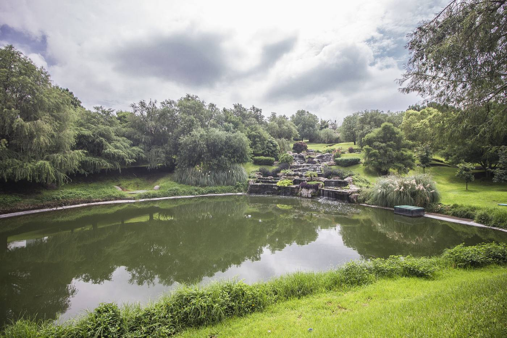
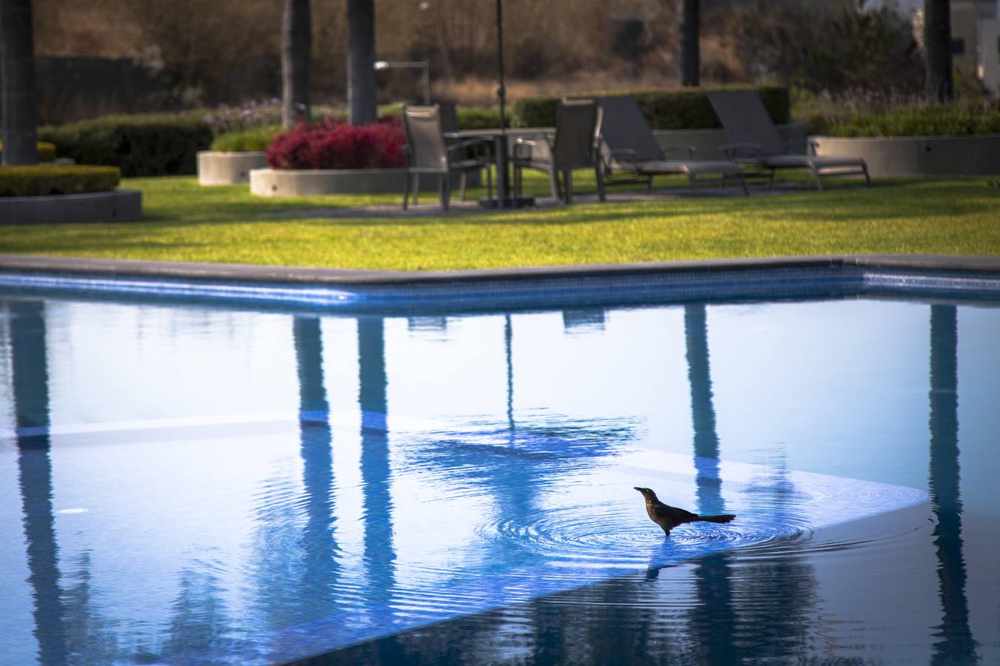
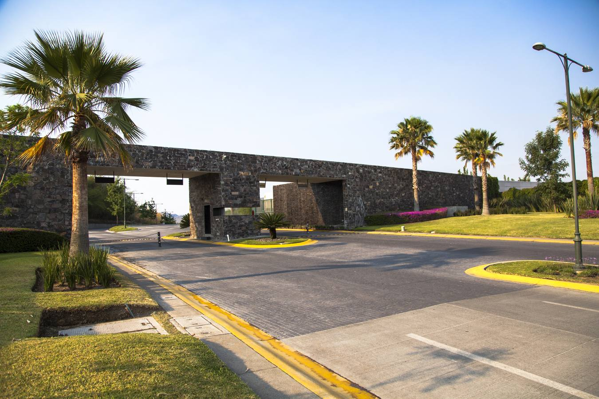

El Bajío · Zapopan · Junto al Bosque de la Primavera
¿Vas a construir tu casa en Zapopan? Empieza por el terreno correcto
Paga tu terreno mientras construyes tu casa
Te decimos qué revisar antes de comprar, cuánto cuesta el metro cuadrado en un coto privado y qué terrenos te alcanzan con tu presupuesto, en 3 preguntas.
Respuesta rápida
¿Cuánto cuesta y qué necesitas para comprar un terreno y construir tu casa en Zapopan?
Para construir tu casa en Zapopan necesitas un terreno con escritura inscrita, libre de gravámenes, con uso de suelo habitacional y servicios a pie de lote. En un coto privado como Los Sueños Residencial, en El Bajío, Zapopan, un terreno de 448 a 612 m² cuesta de $8,000,000 a $14,103,802 de contado, es decir, de $17,800 a $23,500 por m² según la categoría. La escrituración y la entrega son inmediatas, y además de precios especiales de contado hay crédito directo del desarrollo y crédito bancario, así que puedes pagar tu terreno mientras construyes tu casa. Hoy hay 34 lotes disponibles en cuatro categorías: A, AA, AAA y Diamante.
Buscador de terrenos
¿Qué terreno te alcanza?
Contesta 3 preguntas y te mostramos los lotes disponibles hoy en Los Sueños Residencial que encajan contigo.
1. ¿Cuál es tu presupuesto para el terreno?
2. ¿De qué tamaño lo buscas?
3. ¿Cuándo quieres empezar a construir?
Terrenos que encajan contigo
34 lotes disponibles. Estos son los de mejor precio:
Antes de comprar
6 cosas que debes revisar en un terreno en Zapopan
Antes de comprar un terreno en Zapopan revisa seis cosas: escritura inscrita, libertad de gravámenes, predial y agua al corriente, uso de suelo habitacional, servicios a pie de lote y reglamento del coto. Un terreno barato sale caro si no se puede escriturar o construir, así que revisa esto antes de dar cualquier apartado.
- Escritura inscritaQue el terreno esté escriturado e inscrito en el Registro Público de la Propiedad de Jalisco, a nombre de quien vende.
- Libertad de gravámenesUn certificado reciente que confirme que no tiene hipotecas, embargos ni juicios.
- Predial y agua al corrientePide los recibos del año. Los adeudos pasan al nuevo dueño.
- Uso de suelo habitacionalQue el municipio permita vivienda unifamiliar en ese predio y con qué restricciones.
- Servicios a pie de loteAgua, drenaje, luz y vialidades terminadas, para que puedas tramitar tu licencia y construir.
- Reglamento del cotoAlturas, frentes, materiales y cuotas de mantenimiento. Mejor saberlo antes de diseñar tu casa.
En Los Sueños Residencial la escrituración es inmediata por fideicomiso y los lotes se entregan de inmediato, listos para construir.
Por qué Los Sueños
Compra hoy, construye a tu ritmo
Los Sueños Residencial es un coto privado de terrenos residenciales en El Bajío, Zapopan, junto al Bosque de la Primavera, sobre la Carretera Guadalajara-Tepic (Prolongación Av. Vallarta). Tiene 34 lotes disponibles de 448 a 612 m², más de 50,000 m² de áreas verdes y más de 15 amenidades ya en operación, y lo comercializa UNO Brokers, inmobiliaria en Zapopan desde 1995.
Escrituración y entrega inmediata
Escrituras por fideicomiso al comprar y el terreno se entrega de inmediato. No esperas tiempos de obra del desarrollo.
Paga mientras construyes
Precios especiales de contado y esquemas de financiamiento, para que tu dinero vaya también a tu casa.
Un entorno ya en marcha
Lago panorámico, casa club, alberca, gimnasio, pádel, simulador de golf, acceso controlado y vigilancia 24/7.



Precios
¿Cuánto cuesta el m² en un coto privado en Zapopan?
En Los Sueños Residencial el m² de terreno en coto privado cuesta de $17,800 a $23,500 de contado. El lote más accesible es de 448.63 m² por $8,000,000 (categoría A) y el más grande, de 612.41 m², cuesta $14,103,802 (categoría AAA). Estos son los precios de contado de los 34 lotes disponibles, por categoría:
| Categoría | Superficie | Precio de contado |
|---|---|---|
| A | 448 m² | $8,000,000 |
| AA | 463 a 499 m² | $9,270,800 a $11,033,071 |
| AAA | 470 a 612 m² | $9,715,840 a $14,103,802 |
| Diamante | 522 a 554 m² | $12,251,281 a $12,993,790 |
El m² va de unos $17,800 a $23,500 según la categoría y el coto. Precios en MXN, sujetos a disponibilidad y a cambio sin previo aviso. Actualizado al 20 de octubre de 2026.
Preguntas frecuentes
Lo que más nos preguntan
¿Cuánto cuesta un terreno residencial en coto privado en Zapopan?
En Los Sueños Residencial, en El Bajío, Zapopan, los terrenos van de 448 a 612 m² y cuestan desde $8,000,000 hasta $14,103,802 MXN de contado, entre $17,800 y $23,500 por m² según la categoría y el coto.
¿Qué documentos debo revisar antes de comprar un terreno en Zapopan?
Escritura inscrita en el Registro Público de la Propiedad, certificado de libertad de gravámenes, predial y agua al corriente, uso de suelo habitacional y el reglamento de construcción del coto.
¿Puedo pagar el terreno mientras construyo mi casa?
Sí. En Los Sueños Residencial la escrituración y la entrega son inmediatas, y además de precios especiales de contado hay esquemas de financiamiento, así que puedes empezar a construir mientras terminas de pagar el terreno.
¿Dónde está Los Sueños Residencial?
Los Sueños Residencial está en Carretera Guadalajara-Tepic 2701 (Prolongación Av. Vallarta), El Bajío, C.P. 45222, Zapopan, Jalisco, junto al Bosque de la Primavera y conectado con Ciudad Granja, el Periférico Poniente, Zona Real y Valle Real.
¿Qué formas de pago hay para comprar un terreno en Los Sueños?
Puedes comprar de contado con precios especiales, con crédito directo del desarrollo o con crédito bancario. Como la escrituración y la entrega son inmediatas, puedes pagar tu terreno mientras construyes tu casa.
¿Puedo construir de inmediato?
Sí. Los lotes de Los Sueños Residencial cuentan con servicios y se escrituran de inmediato por fideicomiso, por lo que puedes tramitar tu licencia y empezar tu obra sin esperar.
Tu casa empieza con el terreno
Agenda un recorrido por Los Sueños Residencial y conoce los lotes disponibles. La asesoría no tiene costo para ti.